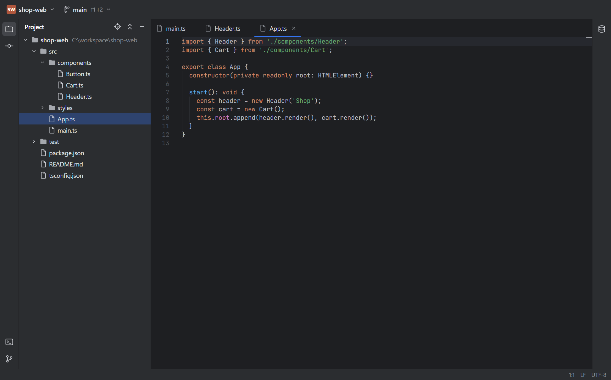
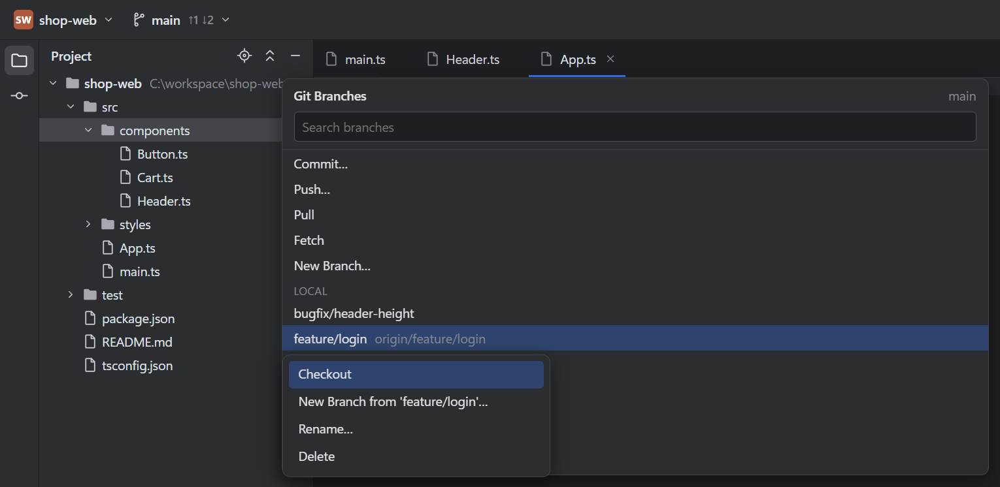
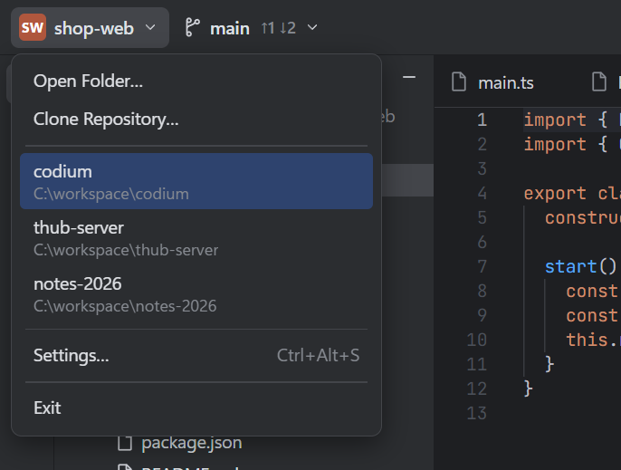
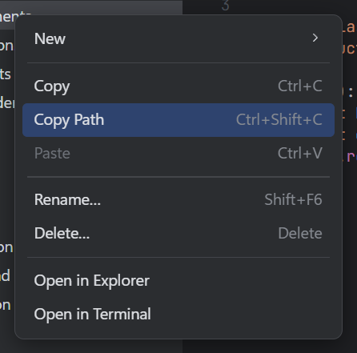
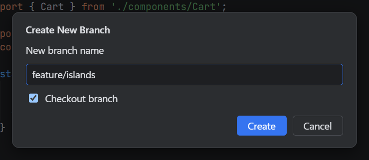
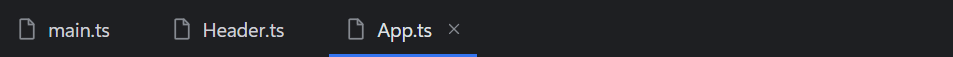
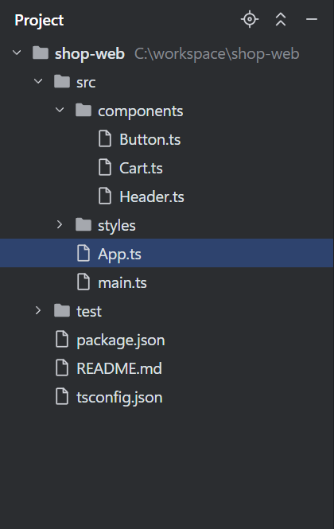

Skizze zu Ticket 25, erste Runde, zur Freigabe. Links bzw. oben steht jeweils der heutige Stand als Bildschirmfoto der echten App (Testmodus, verborgenes Fenster, 150 %), daneben bzw. darunter der Vorschlag, nachgebaut mit HTML und CSS in den Farben aus tokens.css. Für die grossen Flächen gibt es zwei Varianten: a nur Bedienelemente rund, b zusätzlich Werkzeugfenster und Editor als abgerundete Inseln.
Kurz gesagt
Einheitliche Radien als fünf benannte Werte in tokens.css (dazu einer für die Inseln). Heute stehen 0, 2, 3, 4, 6, 8 und 10 px von Hand nebeneinander.
Auswahl und Hover in Bäumen und Listen als abgerundeter Balken mit 6 px Abstand zum Rand, wie es die Menüs heute schon haben.
Knöpfe und Eingabefelder etwas runder (6 statt 4 px), Fokus als Ring aussen.
Branch-Menü als echtes Dropdown unter dem Branch-Knopf, mit Fetch-Knopf in der Titelzeile, Aktionen mit Symbol und Kürzel, Branch-Symbolen und farbigen Pfeilen für voraus und zurück. Das Untermenü öffnet rechts daneben statt unter der Zeile.
Menüs mit Symbolspalte; im Projektmenü tragen die zuletzt geöffneten Projekte ihr Farbkürzel.
12 neue Symbole, selbst gezeichnet im Stil von icons.tsx, bereit zum Übernehmen in symbole/icons-neu.tsx.
Unverändert bleiben Farben, Schrift, Höhen, Abstände der Kopfzeile, Leisten und Statusleiste. In Variante b ändert sich zusätzlich die Farbe der Werkzeugfenster (siehe Frage 2).
Radien
Vorgeschlagene Variablen für src/renderer/styles/tokens.css. Alle Radien in app.css laufen danach über sie; feste Werte bleiben nur für Kreise (50%) und bewusst eckige Stellen (0).
xs · 3 px
s · 4 px
m · 6 px
l · 8 px
xl · 10 px
island · 10 px
Name
Wert
Wo verwendet
--radius-xs
3 px
Winziges: Häkchen, Etiketten im Git-Log, Inline-Code und Code-Blöcke der Markdown-Vorschau, Treffer-Markierungen, Fortschrittsbalken.
--radius-s (klein)
4 px
Auswahl- und Hoverbalken in Bäumen, Listen, Menüs und Suchfenstern; Symbolknöpfe (24 px); Schliessknopf im Tab; Projektkürzel; Tabs in Werkzeugfenstern (Find, Terminal).
--radius-m (mittel)
6 px
Knöpfe, Eingabe- und Suchfelder, Commit-Nachricht, Datei-Tabs (Hover und aktive Fläche), Kopfzeilen- und Leistenknöpfe, Umschalter der Markdown-Vorschau, Listenfeld im Dialog.
--radius-l (gross)
8 px
Menüs, Branch-Dropdown, Suchfenster (Ctrl + Shift + N usw.), Meldungen, Popup der Änderungsbalken.
Nur Variante b: Werkzeugfenster und Editor. Eigener Name, damit Dialoge und Inseln getrennt einstellbar bleiben. Dazu --island-gap: 6px als Abstand zwischen den Inseln.
Weitere neue Werte: --list-inset: 6px (Abstand der Auswahlbalken zum Rand), --git-incoming: #548af7, --git-outgoing: #5fb865, --git-head: #d6b33d (gleich wie das HEAD-Etikett im Git-Log).
Heutige Radien in app.css und welcher Name sie ersetzt
Schliessknopf im Tab, Umbenennen eines Terminal-Tabs
3 px
s · 4 px
Kopfzeilen- und Leistenknöpfe, Markdown-Umschalter, Listenfeld im Dialog, Code-Block und Mermaid-Fehler
6 px
m · 6 px
Zuletzt geöffnete Projekte im Willkommensfenster (Hover)
6 px
s · 4 px (Auswahlbalken)
Menüs, Suchfenster, Meldungen
8 px
l · 8 px
Popup der Änderungsbalken
6 px
l · 8 px (ein Popup wie die anderen)
Dialoge
10 px
xl · 10 px
Etiketten im Git-Log, Inline-Code, Aufgaben-Kästchen
3 px
xs · 3 px
Fortschrittsbalken, Treffer-Markierungen
2 px
xs · 3 px
Zeilen in Dateibaum, Suchfenstern, Find, Änderungsansicht, Git-Log, Datenbank
eckig, volle Breite
s · 4 px, 6 px Abstand zum Rand
Punkt „ungespeichert“ im Tab
50 %
bleibt (Kreis)
Knöpfe in Monaco
0
bleibt (bewusst eckig)
Gesamtansicht des Projektfensters
Gleicher Inhalt wie im Foto: Projekt shop-web, Baum mit gewählter Datei, drei Tabs. In den Vorschlägen ist zusätzlich unten das Terminal offen, damit man sieht, wie die Flächen aneinanderstossen. Die Fensterknöpfe von Windows (rechts oben) zeichnet Windows selbst; sie fehlen auf allen Bildern.
Heute

Auswahl im Baum über die ganze Breite und eckig. Trennlinien von 1 px zwischen allen Flächen.
Vorschlag, Variante a: Bedienelemente rund, Flächen wie heute
Aufbau, Farben und Trennlinien wie heute. Neu: Auswahl als runder Balken mit Abstand zum Rand, Hover der Tabs rund, voraus und zurück in der Kopfzeile als farbige Pfeile. Der aktive Tab behält den blauen Unterstrich.
Vorschlag, Variante b: zusätzlich Inseln
Werkzeugfenster und Editor als Inseln mit 10 px Radius und 6 px Abstand. Kopfzeile, Leisten und Statusleiste bilden den Rahmen in der heutigen Panelfarbe (#2b2d30); die Inseln haben einheitlich die Editorfarbe (#1e1f22). Die Trennlinien entfallen, der Abstand trennt. Der aktive Tab ist eine runde Fläche statt eines Unterstrichs.
Zum Vergleich: Variante b mit anderer Farbaufteilung
Werkzeugfenster wie heute in #2b2d30, Editor in #1e1f22, dafür ein dunklerer Rahmen (#161719) für Kopfzeile, Leisten und Abstände. Ändert die Kopfzeile, also auch die Farbe der Fensterknöpfe von Windows (theme.ts).
Kopfzeile mit Branch-Dropdown
Heute

Ein Suchfenster oben in der Mitte, nicht am Knopf. „Commit…“, „Push…“, „Pull“, „Fetch“ und „New Branch…“ als reine Textzeilen ohne Symbole und Kürzel. Das Untermenü eines Branches öffnet unter der Zeile und verdeckt den Rest der Liste (hier „main“ und alle Remote-Branches).
Vorschlag
Git Branches
Search branches
PullCtrl+T
Commit…Ctrl+K
Push…Ctrl+Shift+K
New Branch…
Local
bugfix/header-height
feature/loginorigin/feature/login
mainorigin/main12
Remote
origin/feature/checkout
origin/feature/login
origin/main
Checkout
New Branch from 'feature/login'…
Rename…
Delete
Direkt unter dem Branch-Knopf, links bündig (4 px Abstand wie beim Projektmenü). Oben die Titelzeile mit dem Symbolknopf Fetch (Tooltip „Fetch“), darunter das Suchfeld; Tippen filtert sofort. Aktionen mit Symbol und Kürzel. Branches mit Branch-Symbol, der aktuelle mit dem gelben Etikett (gleiche Farbe wie HEAD im Git-Log) statt des Texts „current“; voraus grün ↑, zurück blau ↓. Die gewählte Zeile zeigt ›; ihr Untermenü öffnet rechts daneben. Solange das Untermenü den Fokus hat, bleibt die Zeile grau markiert, der Eintrag im Untermenü blau. „Rename…“ hat kein Symbol, der Platz bleibt frei, damit die Texte bündig stehen.
Vorschlag, beim Tippen
Git Branches
log
Local
feature/loginorigin/feature/login
Remote
origin/feature/login
Wie heute verschwinden die Aktionen, sobald man tippt. Pfeile wählen, Enter oder → öffnet das Untermenü, ← schliesst es, Escape schliesst das Dropdown und gibt den Fokus an den Branch-Knopf zurück.
Projektmenü
Heute

Zuletzt geöffnete Projekte nur mit Name und Pfad. (Pfade fürs Bild gekürzt.)
Vorschlag
Open Folder…
Clone Repository…
COcodiumC:\workspace\codium
TSthub-serverC:\workspace\thub-server
N2notes-2026C:\workspace\notes-2026
Settings…Ctrl+Alt+S
Exit
Jedes Projekt mit seinem Farbkürzel wie in der Kopfzeile (Farbe aus dem Pfad, Buchstaben aus dem Namen). Die Symbolspalte ist hier 20 px breit, damit die Kürzel hineinpassen; Symbole stehen darin mittig. Symbole für „Open Folder…“, „Clone Repository…“ und „Settings…“ sind ein Angebot (Frage 9).
Kontextmenü (Rechtsklick im Baum)
Heute

Menüs haben heute schon runde Auswahlbalken mit Abstand zum Rand. Es fehlt die Symbolspalte.
Vorschlag
New
CopyCtrl+C
Copy PathCtrl+Shift+C
PasteCtrl+V
Rename…Shift+F6
Delete…Delete
Open in Explorer
Open in Terminal
File
Directory
Eigene, bündige Symbolspalte (16 px) in Menu.tsx; Einträge ohne Symbol lassen den Platz frei. Inaktive Einträge dämpfen auch ihr Symbol. Hier mit offenem Untermenü „New“.
Dialog
Heute

Dialog mit 10 px Radius; Feld und Knöpfe 4 px, Häkchen von Chromium.
Vorschlag
Create New Branch
New branch name
feature/islands
Checkout branch
CreateCancel
Dialog bleibt bei 10 px (--radius-xl). Feld und Knöpfe 6 px, fokussiertes Feld mit 2 px breitem Rand, eigenes Häkchen mit 3 px Radius in der Akzentfarbe.
Knöpfe und Eingabefelder
Beide Seiten nachgebaut: links mit den heutigen Werten aus app.css, rechts mit dem Vorschlag. Zustände von links nach rechts: normal, Hover, Fokus, inaktiv.
Heute
Knöpfe
Symbolknöpfe (normal, Hover, eingeschaltet)
Eingabefelder (normal, Fokus, ungültig)
feature/islands
feature/islands
feature islands
Invalid branch name
Suchfeld
Search branches
Häkchen
Vorschlag
KnöpfeCreateCancelCancelCancelCreateCancel
Symbolknöpfe (normal, Hover, eingeschaltet)
Eingabefelder (normal, Fokus, ungültig)
feature/islands
feature/islands
feature islands
Invalid branch name
Suchfeld, mit Lupe
Search branches
HäkchenCheckout branchAmend
Unverändert: Umschalter der Markdown-Vorschau (6 / 4 px)EditorSplitPreview
Knöpfe 6 px und mindestens 72 px breit (wie in IntelliJ), Fokus als Ring aussen für beide Knopfarten (heute innen beim normalen, aussen beim blauen Knopf). Felder mit Fokus oder Fehler bekommen einen 2 px breiten Rand.
Datei-Tabs
Heute

Vorschlag zu Variante a: Unterstrich bleibt, Hover rund
Vorschlag zu Variante b: aktiver Tab als runde Fläche
In beiden Vorschlägen ist „Header.ts“ unter der Maus (Hover als runde Fläche, 6 px) und „README.md“ ungespeichert. Der Schliessknopf hat 4 px. Die Wahl ist unabhängig von der Flächen-Variante (Frage 4).
Werkzeugfenster mit Baum und Auswahl
Heute

Auswahl über die ganze Breite, eckig.
Variante a
Auswahl und Hover (hier „main.ts“) als runder Balken, 6 px Abstand zum Rand, 4 px Radius. Text steht an derselben Stelle wie heute.
Variante b
Dasselbe als Insel in der Editorfarbe auf dem Rahmen.
Wo die runden Auswahlbalken überall hinkommen (laut Ticket): Projektbaum, Änderungsansicht (Commit), Menüs (schon heute so), Branch-Dropdown, Suchfenster (Ctrl + Shift + N, Ctrl + E, Ctrl + Shift + F, Ctrl + N), Werkzeugfenster „Find“, Git-Log und Datenbankliste. Überall gleich: 6 px Abstand links und rechts, 4 px Radius, gewählte Zeile #2e436e mit Fokus, #43454a ohne Fokus, Hover #393b40.
Im Git-Log und in der Tabellenansicht der Datenbank bleiben Zellen und Raster eckig; nur die Zeilenauswahl im Log wird zum Balken.
Symbole
Selbst gezeichnet im Stil von src/renderer/icons.tsx: 16 px, Linien 1,2 px in der Symbolfarbe, runde Enden. Akzentfarben nur, wo sie etwas bedeuten: blau für Eingehendes (Pull, zurück), grün für Ausgehendes (Push, voraus), gelb für den aktuellen Branch. Je Symbol: 100 %, 150 % und dreifach auf dem Pixelraster.
Zum Übernehmen: symbole/icons-neu.tsx (Komponenten im Format von icons.tsx, dazu die drei CSS-Regeln und Farben im Kopf der Datei). Einzeln als SVG mit festen Farben in symbole/.
Neu
Bestehend und wiederverwendet
Diese kommen unverändert aus icons.tsx: „Commit…“ nutzt das Symbol des Werkzeugfensters Commit, „New Branch…“ und „New“ das Plus, die Branch-Zeilen das Branch-Symbol der Kopfzeile, das Suchfeld die Lupe, „Open Folder…“ den Ordner und „Clone Repository…“ das Git-Symbol.
Empfehlung und Fragen zur Freigabe
Empfehlung: Variante b, mit einheitlicher Inselfarbe (Werkzeugfenster wie der Editor). Sie bringt den Eindruck des neuen IntelliJ am deutlichsten: Die Flächen sind klar getrennt, ohne dass Linien nötig sind, und Kopfzeile, Leisten und Fensterknöpfe bleiben in der heutigen Farbe. Der Mehraufwand gegenüber a ist überschaubar: Abstände im Layout, Radius und Abschneiden an Werkzeugfenstern und Editor; die Griffe zum Verschieben liegen dann im Abstand und sind leichter zu treffen. Die Risiken (Monaco und Terminal in runden Ecken, maximierte Werkzeugfenster) prüft der Einbau mit Bildschirmfotos im Testmodus.
Variante a ist die vorsichtige Wahl: kaum sichtbare Änderung am Gesamtbild, dafür weniger „neues IntelliJ“.
Variante für die Flächen: a oder b?Empfehlung b.
Bei b: Farbaufteilung. Inseln einheitlich in der Editorfarbe auf dem heutigen Panelgrau (Vorschlag), oder Werkzeugfenster wie heute auf einem dunkleren Rahmen (Vergleichsbild)? Empfehlung: einheitlich.
Bei b: Masse der Inseln. 10 px Radius und 6 px Abstand passend, oder lieber enger (4 px) bzw. runder (12 px)?
Datei-Tabs: blauer Unterstrich wie heute (mit rundem Hover) oder aktiver Tab als runde Fläche? Empfehlung: Fläche zu b, Unterstrich zu a.
Radien: Knöpfe und Felder 6 px statt 4 px, Auswahlbalken 4 px mit 6 px Abstand zum Rand – so freigeben?
Branch-Dropdown, Kopf: eigene Titelzeile „Git Branches“ mit Fetch-Knopf über dem Suchfeld (wie im Ticket und hier gezeigt), oder kompakter Suchfeld und Fetch-Knopf in einer Zeile?
Aktueller Branch: gelbes Etikett passend zu HEAD im Git-Log in Ordnung? Und bleibt er alphabetisch einsortiert (wie heute) oder steht er zuoberst unter „Local“?
Symbole im Untermenü: „Rename…“ ohne Symbol (Platz frei, wie gezeigt) oder mit dem Stift (liegt bei den Symbolen bereit)? Und „Commit…“ mit dem Symbol des Werkzeugfensters (gezeigt) oder einem Häkchen wie in IntelliJ?
Projektmenü: Symbole auch für „Open Folder…“, „Clone Repository…“ und „Settings…“ (gezeigt), oder nur die Farbkürzel der Projekte?
Kopfzeile: voraus und zurück dort ebenfalls als farbige Pfeile (in den Vorschlägen gezeigt; heute grauer Text „↑1 ↓2“)? Das ist eine kleine Erweiterung über das Ticket hinaus.
So entstanden die Bilder
Die Fotos „Heute“ stammen von einem vorübergehenden Playwright-Test über launchCodium im Testmodus (verborgenes Fenster, eigener Datenordner, Temp-Repository mit lokalem Remote); der Test ist wieder entfernt. Temp-Pfade sind fürs Bild durch C:\workspace\… ersetzt. Die Vorschläge sind HTML und CSS in dieser Datei, mit denselben Farben, Schriften und Massen wie tokens.css und app.css; die Symbole kommen aus symbole.js.